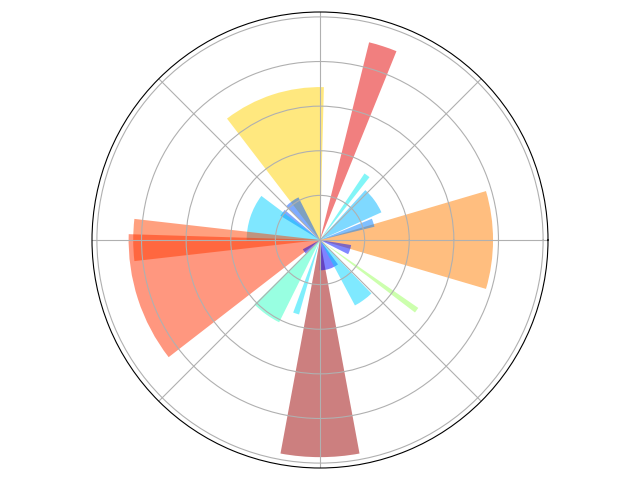

Note
Go to the end to download the full example code
Plotting in polar coordinates¶
A simple example showing how to plot in polar coordinates with matplotlib.
import numpy as np
import matplotlib.pyplot as plt
ax = plt.axes([0.025, 0.025, 0.95, 0.95], polar=True)
N = 20
theta = np.arange(0.0, 2 * np.pi, 2 * np.pi / N)
rng = np.random.default_rng()
radii = 10 * rng.random(N)
width = np.pi / 4 * rng.random(N)
bars = plt.bar(theta, radii, width=width, bottom=0.0)
for r, bar in zip(radii, bars):
bar.set_facecolor(plt.cm.jet(r / 10.0))
bar.set_alpha(0.5)
ax.set_xticklabels([])
ax.set_yticklabels([])
plt.show()
Total running time of the script: (0 minutes 0.105 seconds)